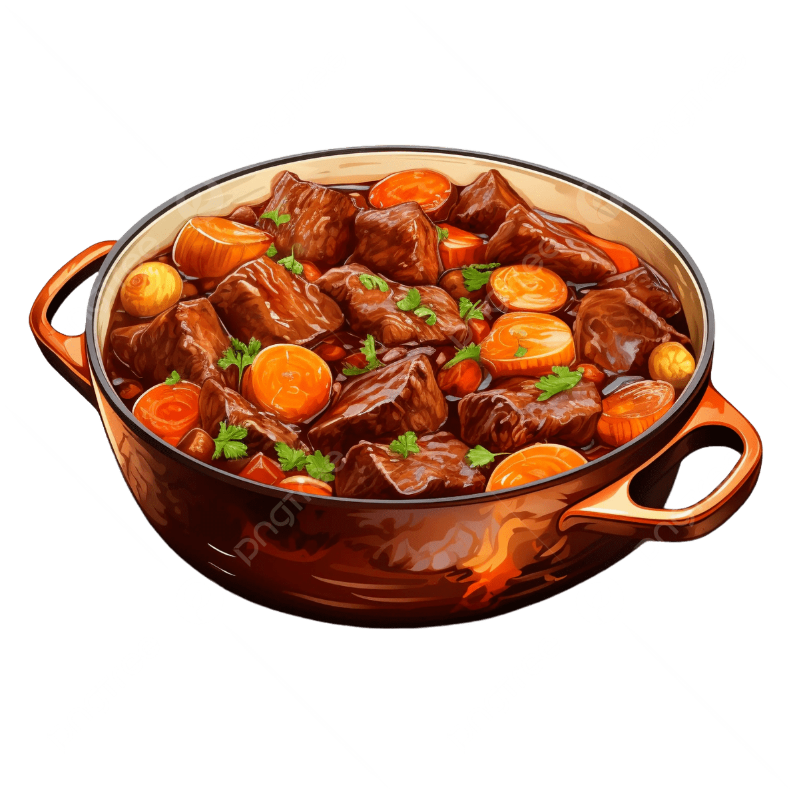

Original Recipe
Beef Stew

Introduction
I chose this recipe because i enjoy beef stew and this also looks similar to my dads, which is probably better, so I chose this recipe because of its familiarity and how it looks. The taste consists of a rich, umami flavour, with beef boiled in a simple beef stock.
Ingredients
- (2 lbs) diced top sirloin
- (2 ribs) diced Celery
- (8 oz) Cremini Mushrooms
- (3 cloves) Garlic
- (3 tsp) All-Purpose Flour
- (2 tsp) Tomato Paste
- (½ cups) Red Wine
- (2½ cups) Beef Stock
- (4 sprigs) Thyme
- (2 leaves) Bay Leaf
- 1 Russet Potato
- (4 tsp) Fresh Parsley Leaf
Instructions
- Season steak with 1 teaspoon salt and ½ teaspoon
- Heat olive oil in a large stockpot or Dutch oven over medium high heat. Working in batches, add steak to the stockpot and cook, sirring occansionlly, until evenly browned, about 6-8 minutes; set aside.
- Reduce heat to medium. Add onions, carrots and cleery. Cook, siring occansionally, until tender, about 3-4 minutes.
- Ad garlic and mushrooms, and cook, stirring occasionally, until tender and browned, about 3-4 minues.
- Whisk in flour and tomato paste until lightly browned about 1 minute.
- Stir in wine, scraping any browned bits from the bottom of the stockpot.
- Stir in beef stock, thyme, bay leaves and steak. Bring to a boil; reduce heat and simmer until beef is very tender; about 30 minutes.
- Stir in potato; simmer until potatoes are just tender and stew has thickened, about 20 minutes. Remove and discard thyme sprigs and bay leaves. Stir in parsley; season wih salt and pepper, to taste
- Serve immediately
